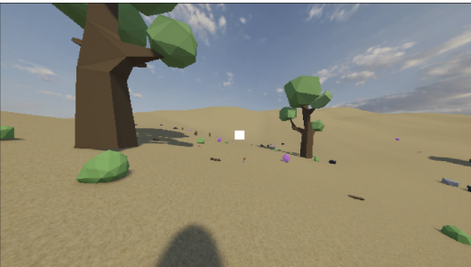
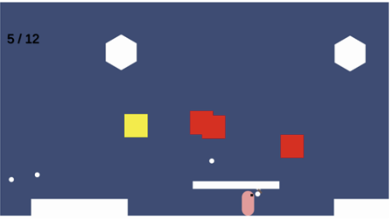
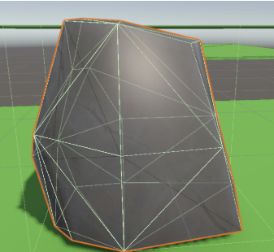
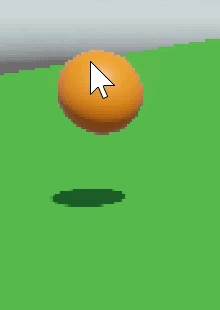
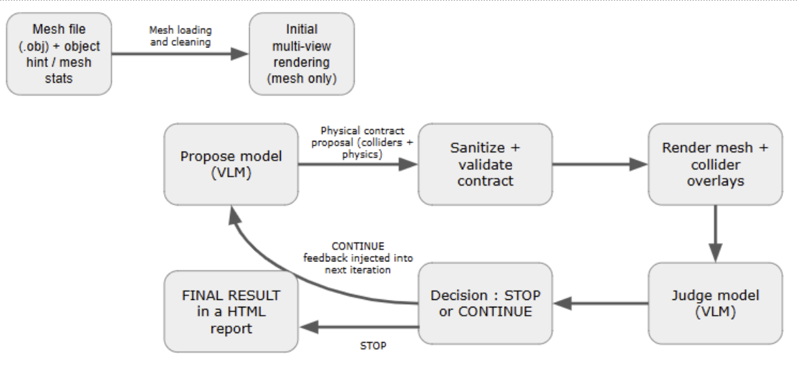
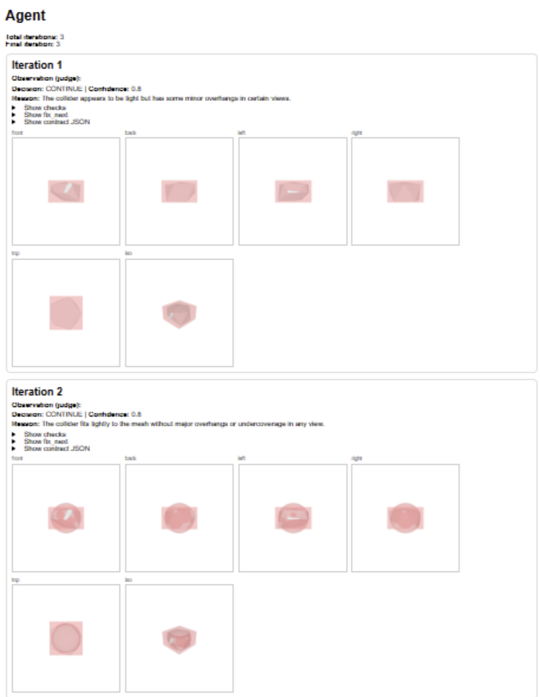

A research project on whether large language models can automate the configuration of physical behaviour for 3D objects, from raw prompting to a fully iterative AI agent.
Giving 3D objects realistic physical behaviour in engines like Unity (correct colliders, mass, friction, bounciness) is traditionally a manual, experience-driven process. It's slow, and the parameters developers choose are often inconsistent from one object to the next. With LLMs increasingly capable at code generation, the question became: can generative AI reliably take over part of this configuration work, and how far can it go on its own?
Rather than committing to a single technique, the project builds up in stages, each one addressing the weaknesses found in the last.
Configuring colliders, Rigidbody, and physics materials by hand, the qualitative baseline everything else is measured against.
Asking the model to write a full C# script from a mesh description. Fast, but colliders and physical parameters came out arbitrary and inconsistent, and the code sometimes failed to compile.
Constraining the model with a fixed prompt structure improved consistency and collider placement, at the cost of needing several rounds of interaction per object.
Objects were grouped into families with reusable scripts and predefined physical presets. The model's role shrank to just picking the right parameters, giving far more stable results.
An agent that analyzes an object and proposes physical parameters as a structured JSON contract, then iterates on its own proposal across several passes.
Every approach was assessed qualitatively against the same four criteria.
How much manual work was needed to reach a usable configuration.
Whether the simulation behaved reliably once running.
Whether the object's behaviour looked physically credible.
For auto-generated colliders, how closely they matched the mesh.
A few snapshots from across the project, from the first manual Unity scene to the final agent-assisted world.






Direct LLM generation turned out to be a misleading shortcut: quick, but the arbitrary parameters usually needed the same manual fixing as starting from scratch. Structuring the prompts helped, but stayed slow. The clearest win was the hybrid approach, splitting objects into families with reusable scripts and letting the model only choose presets. That combination was stable enough to assemble a small interactive virtual world. The iterative agent, while still early stage, showed real promise: it consistently produced valid, structured proposals and improved them across iterations.
Benchmark several LLMs against each other to identify which performs best for this specific task.
Run the iterative agent on more powerful compute to allow more refinement passes and more meaningful results.
Extend the agent to generate skeleton structures for branching objects like trees, with geometric constraints guiding joint placement.
The complete thesis covers the Unity fundamentals, related work, and full implementation, including the agent's source code in the appendix.